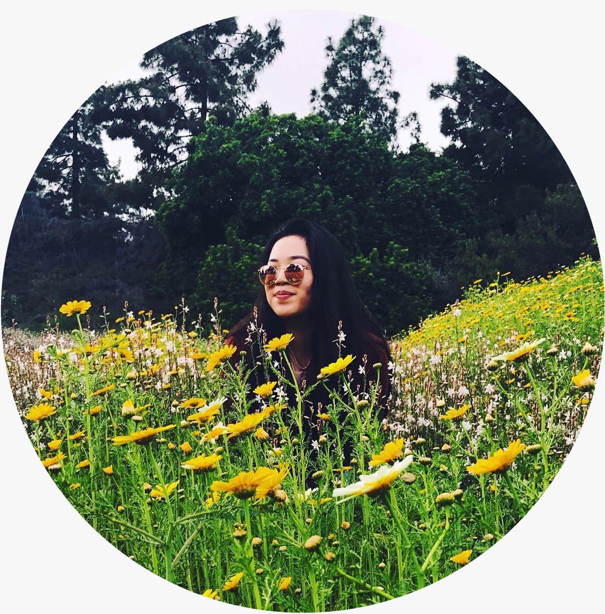

From San Diego, California, Quynh currently
pursues her Bachelor's in Media Studies
at the University of California, Berkeley. She
is a freelance illustrator and graphic designer
whose work draws inspiration from people
of color, pop culture, art history, and animation.
pursues her Bachelor's in Media Studies
at the University of California, Berkeley. She
is a freelance illustrator and graphic designer
whose work draws inspiration from people
of color, pop culture, art history, and animation.
ART IS ALWAYS FOR THE FUTURE. -ANTONY GORMLEY